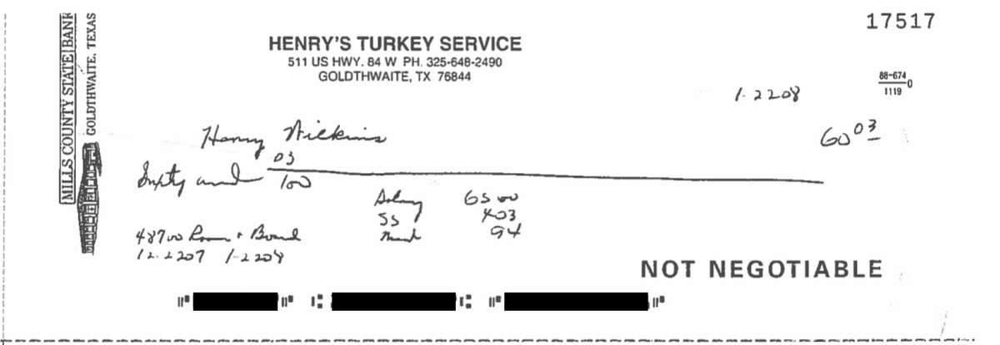

Decline
Beyond Atalissa, life evolved.
As the decades passed, the "R-word" disappeared from the professional lexicon. Inclusion replaced exclusion. Class-action lawsuits, media investigations and groundbreaking government legislation further established the rights of people with a developmental disability to have choice in their lives.
The men of Henry's Turkey Service, though, remained trapped in Atalissa amber. No cellphones. No romantic relationships. No choices in where to live. Other than the gray-white dusting in Willie Levi's hair, or the lines creasing Henry Wilkins's face, or the bodily damage done by decades of assembly-line toil, nothing changed, including their pay.
The 2007 time sheets for Mr. Wilkins tell the tale. No matter how many hours he worked - 163 hours in one period, 139.59 in another - his earnings were always shown to be exactly $1,041.09. And his take-home pay never exceeded $65.

That same year, the turkey plant paid Henry's Turkey Service more than $500,000 for services rendered.
By this point, a married couple, Randy and Dru Neubauer, had been the men's hands-on supervisors for several years. Like their predecessors, they had no training in caring for people with disability; Mr. Neubauer's previous experience was in landscaping.
When the boss man, T. H. Johnson, died at 74 in early 2008, the Neubauers became the sole on-site managers of a business now cruel in its simplicity.
The men continued to rise at 3 a.m. for a breakfast prepared by an older housemate who always made sure to wash his hands after killing another bug while cooking. Still, many men ate with one hand over their plates to block the roaches falling from the ceiling.
Sick time was not always an option. Mr. Berg pulled guts while struggling with throat cancer and chemotherapy treatment. "I threw up at my house and I threw up at work," he says.
The men also say Mr. Neubauer and an assistant often harassed them to quicken the pace on the assembly line. "They wanted me to work faster," Mr. Wilkins says. "I can't do that."
One day in 2007, Mr. Neubauer sent a slight man named Johnny Kent sprawling to the ground. Mr. Neubauer called it accidental, but Mr. Kent disagrees: "He knocked me down."
The turkey plant, now owned by West Liberty Foods, notified Henry's Turkey Service by letter that Mr. Neubauer had been seen "abusively yelling at Henry's workers and physically punching them." Barred from the plant, he still kept his job at the schoolhouse, overseeing those he had been accused of abusing.
On the drive home, the Henry's vans sometimes stopped at a local market, where the men could dash in to buy a can of Copenhagen snuff, a Mountain Dew, a Honey Bun. But if supervisors thought that a man hadn't been working hard enough, they'd order him to remain in the van.
"Damn lie,"" says James Fowler, who pulled guts. "I did work hard enough."
The punishment continued at the schoolhouse. A man might be told to pull weeds. To stay in his room, with no television or radio. To forget about going to church on Sunday. To place both hands on a pole and stay that way until supper. To walk in circles while carrying heavy weights.
"They said I wasn't doing a good job," Mr. Levi says. "So - 'Get your black butt up and get them weights.' "
A gut puller named Tommy Johnson suffered more than most. Short, stout and with a constant expression of woe, he rarely cleaned his room, often picked through the trash and sometimes ran off. "I would walk," he says, moving two fingers along a table to illustrate.
A couple of times, Mr. Johnson was handcuffed to his bed overnight. Another time, he says, "one of them kicked me in the nuts" - an injury that later caused testicular problems.
Mr. Neubauer declined to comment for this article. But he acknowledged in court testimony and in interviews with investigators that he sometimes disciplined the men. He alternately admitted and denied handcuffing Mr. Johnson. As for the carrying of weights, he said: "The doctor wanted them to do exercises."
"He say: 'You leave him alone,' " Mr. Levi recalls. "He say, 'I'm going to deck you one!' "
In the end, the men of Atalissa had only one another, their everyday lives unaltered by those rare moments when the world beyond Atalissa seemed to take note of their existence.
The federal Department of Labor cited Henry's Turkey Service for not properly compensating the men; the company promised to comply, but didn't. The Iowa Department of Human Services received several complaints over the years, including similar allegations of abuse from a relative and a former worker. Nothing changed.
Mr. Hepker, the former Atalissa official, tried to alert the Department of Human Services after noticing that the schoolhouse's front door was padlocked. "I was told that they were understaffed as all government agencies are, and did I have any evidence," he recalls. "And I said, 'Well, just the door being padlocked shut.' "
The padlock disappeared. But the incident continues to vex Mr. Hepker. If he had called about a skinny dog in someone's yard, he says, the response would have been quicker, and better.
At night, life in the schoolhouse wound down.
Supper with hands held over plates. Medication collected from a dingy come-and-get-it board. Laundry done by a resident who scrubbed away the signs of denied bathroom breaks. Sleeping on beds dampened by ceiling leaks. Lights out.
And 32 men went to sleep, only to do it all over again at 3 o'clock in the morning.